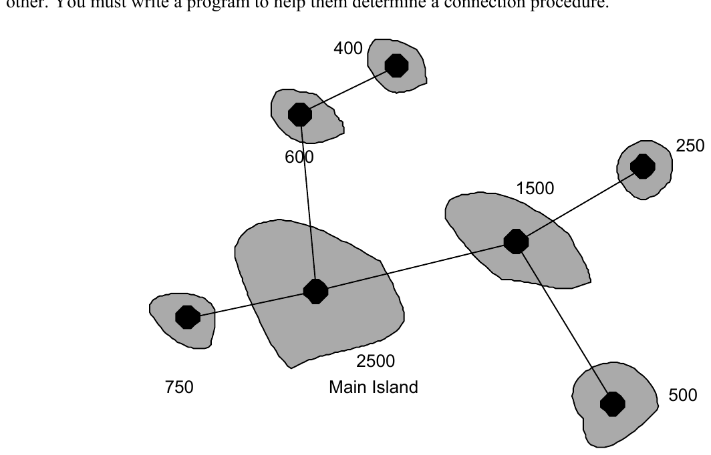

2002 ACM Programming Contest World Finals · Problem E
The company Pacific Island Net (PIN) has identified several small island groups in the Pacific that do not have a fast internet connection. PIN plans to tap this potential market by offering internet service to the island inhabitants. Each groups of islands already has a deep-sea cable that connects the main island to the closest internet hub on the mainland (be it America, Australia or Asia). All that remains to be done is to connect the islands in a group to each other. You must write a program to help them determine a connection procedure.

For each island, you are given the position of its router and the number of island inhabitants. In the figure, the dark dots are the routers and the numbers are the numbers of inhabitants. PIN will build connections between pairs of routers such that every router has a path to the main island. PIN has decided to build the network such that the total amount of cable used is minimal. Under this restriction, there may be several optimal networks. However, it does not matter to PIN which of the optimal networks is built.
PIN is interested in the average time required for new customers to access the internet, based on the assumption that construction on all cable links in the network begins at the same time. Cable links can be constructed at a rate of one kilometer of cable per day. As a result, shorter cable links are completed before the longer links. An island will have internet access as soon as there is a path from the island to the main island along completed cable links. If mi is the number of inhabitants of the ith island and ti is the time when the island is connected to the internet, then the average connection time is (Σi timi)/(Σi mi).
The input consists of several descriptions of groups of islands. The first line of each description contains a single positive integer n, the number of islands in the group (n ≤ 50). Each of the next n lines has three integers xi, yi, mi, giving the position of the router (xi, yi) and number of inhabitants mi (mi > 0) of the islands. Coordinates are measured in kilometers. The first island in this sequence is the main island.
The input is terminated by the number zero on a line by itself.
For each group of islands in the input, output the sequence number of the group and the average number of days until the inhabitants are connected to the internet. The number of days should have two digits to the right of the decimal point. Use the output format in the sample given below.
Place a blank line after the output of each test case.
7 11 12 2500 14 17 1500 9 9 750 7 15 600 19 16 500 8 18 400 15 21 250 0
Island Group: 1 Average 3.20